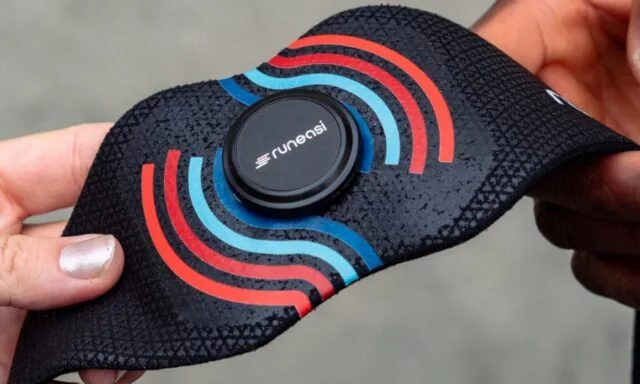
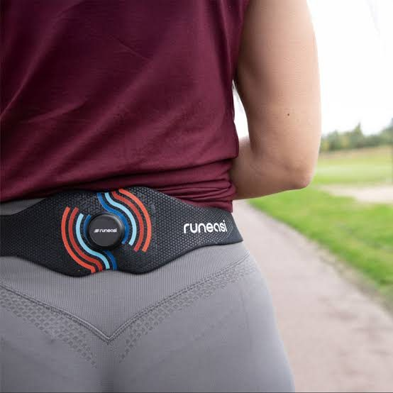

Nếu bạn từng đau đầu gối, đau gân gót hay đau cẳng chân mỗi khi chạy bộ mà không rõ nguyên nhân, có lẽ bạn đã nghe ai đó khuyên "nên đi phân tích dáng chạy". Nhưng phân tích dáng chạy truyền thống — dù là bằng mắt thường của huấn luyện viên hay quay video chậm — vẫn có một giới hạn rất lớn: mắt thường không thể nhìn thấy lực.
# Công nghệ AI phân tích dáng chạy: Khi khoa học phòng lab bước ra đường chạy
Bạn có thể thấy một người chạy "đẹp" hay "xấu", nhưng bạn không thể thấy được mỗi bước chân đang dội lên khớp gối bao nhiêu lực, cơ thể đang hấp thu sốc tốt hay kém, hay bên chân nào đang âm thầm bù trừ cho bên còn lại. Đó chính là khoảng trống mà một xu hướng công nghệ mới — phân tích dáng chạy bằng cảm biến AI — đang cố gắng lấp đầy.
Gần đây mình có dịp tìm hiểu về RunEASI, một trong những công ty đi đầu trong lĩnh vực này, qua chia sẻ của TS. Kurt Schütte (Tiến sĩ Sinh cơ học, đồng sáng lập công ty) trên podcast Physiotutors. Xin chia sẻ lại những điều mình thấy thú vị và hữu ích, viết theo cách dễ hiểu nhất có thể cho những ai không chuyên về sinh cơ học.

Vấn đề: Khoảng cách giữa phòng lab và phòng khám
Trong các phòng thí nghiệm sinh cơ học ở trường đại học, người ta có thể đo lực chân đạp xuống đất bằng những tấm cảm biến chuyên dụng (force plate) và ghi lại chuyển động 3D bằng hệ thống camera hồng ngoại (motion capture) — độ chính xác gần như tuyệt đối. Nhưng những hệ thống này rất đắt, cồng kềnh, đòi hỏi gắn nhiều điểm đánh dấu lên cơ thể, và gần như không một phòng khám tư nhân nào có đủ điều kiện trang bị.
Ở đầu bên kia, chúng ta có các ứng dụng quay video bằng điện thoại — rẻ, tiện, nhưng độ chính xác phụ thuộc rất nhiều vào góc quay, khoảng cách đặt camera, và nhiều ứng dụng "AI" hiện nay trên thị trường thực ra chưa từng được đối chiếu, kiểm chứng một cách khoa học nghiêm túc.
Câu hỏi đặt ra: liệu có cách nào mang được độ chính xác của phòng lab vào một phòng khám bình thường, với chi phí và thời gian hợp lý?
Giải pháp: Một cảm biến nhỏ, đeo ở thắt lưng

Cách tiếp cận của RunEASI khá đơn giản về mặt ý tưởng: gắn một cảm biến chuyển động (gọi là IMU — thiết bị đo quán tính, có thể hình dung như "hộp đen" trong máy bay, chuyên ghi lại gia tốc và độ rung) vào vùng xương cùng, ngay sát thắt lưng — vị trí gần với trọng tâm cơ thể nhất.
Từ dữ liệu rung động rất nhỏ ghi được ở vị trí này, thuật toán sẽ "giải mã" ngược lại thành các thông số về lực tác động, độ ổn định và độ đối xứng của từng bước chạy. Nhóm phát triển ví thiết bị này như "một tấm đo lực và một hệ thống motion capture được gộp lại, thu nhỏ vào một chiếc đai thể thao gọn nhẹ".
Điều quan trọng là độ tin cậy của nó không phải lời quảng cáo suông. Để kiểm chứng, nhóm nghiên cứu đã cho người chạy đeo đồng thời cả cảm biến này và hệ thống phòng lab chuẩn (Vicon motion capture + force plate), sau đó đối chiếu từng số liệu một. Sau nhiều vòng hiệu chỉnh — đặc biệt là học được cách cố định cảm biến sao cho không bị nhiễu do quần áo xê dịch — sai số hiện chỉ còn khoảng 1–3% so với tiêu chuẩn vàng. Với mục đích đưa ra quyết định điều trị trong lâm sàng, đây là mức sai số được xem là chấp nhận được.
Ba chỉ số kể một câu chuyện về cách bạn chạy
Thay vì đưa ra hàng chục con số khó hiểu, hệ thống tập trung vào ba nhóm chỉ số cốt lõi:
1. Mức độ chịu tải khi tiếp đất (impact loading). Đơn giản là: bạn tiếp đất mạnh hay nhẹ, và lực đó truyền lên cơ thể nhanh hay chậm. Nếu lực quá lớn, thường gợi ý cơ thể đang thiếu sức mạnh để hấp thu tải trọng — cần tập luyện sức mạnh (strength training). Nếu lực truyền lên rất nhanh trong thời gian cực ngắn, thường gợi ý cần các bài tập bật nhảy phản xạ (plyometric) để cải thiện khả năng "giảm xóc" của cơ thể.
2. Độ ổn định khi vận động (dynamic stability). Đo mức độ lắc lư của khung chậu sang hai bên khi chạy. Lắc lư nhiều thường phản ánh sự kiểm soát chưa tốt của nhóm cơ hông và vùng thắt lưng–chậu — không chỉ ảnh hưởng hiệu suất mà còn tiêu tốn năng lượng không cần thiết.
3. Độ đối xứng hai bên (symmetry). So sánh chân trái và chân phải. Có hai kiểu mất đối xứng thường gặp: kiểu "dồn tải" — dồn nhiều lực hơn vào bên từng chấn thương hoặc phẫu thuật, và kiểu "né tải" (dáng đi bảo vệ, antalgic gait) — giảm tải ở bên đau để tránh khó chịu. Cả hai kiểu đều là dấu hiệu cơ thể đang bù trừ, và nếu kéo dài có thể dẫn đến chấn thương ở vị trí khác.
Một điều mình rất tâm đắc khi nghe TS. Schütte chia sẻ: nhóm phát triển cố tình **không** gắn nhãn kiểu "bạn là người sải chân quá dài" hay "bạn có dáng chạy bắt chéo" cho người tập, vì việc dán nhãn dễ khiến người ta cảm thấy bị chê trách thay vì được hướng dẫn. Thay vào đó, báo cáo tập trung vào điểm mạnh và điểm cần cải thiện — một cách tiếp cận tích cực hơn nhiều.
Hai câu chuyện thực tế đáng chú ý
TS. Schütte kể lại hai trường hợp khá thú vị.
Trường hợp thứ nhất là một bệnh nhân sau phẫu thuật hông. Nhìn bên ngoài, cô hồi phục rất tốt — sức mạnh ổn, vận động trơn tru, không than phiền gì. Nhưng dữ liệu cho thấy một điều bất ngờ: sự mất đối xứng và mức chịu tải lại **cao hơn ở chân lành**, tức cô đang vô thức "bảo vệ" chân vừa phẫu thuật bằng cách dồn tải sang bên kia — một kiểu bù trừ mà mắt thường khó nhận ra. Sau khi điều chỉnh bài tập tập trung vào khả năng hấp thu sốc và ổn định, tái kiểm tra sau sáu tuần cho thấy độ đối xứng đã trở lại bình thường.
Trường hợp thứ hai là một người chạy trail từng phẫu thuật dây chằng chéo trước (ACL). Nhìn bằng mắt thường, dáng chạy của anh hoàn toàn ổn. Nhưng khi làm bài kiểm tra bật nhảy lặp lại, chân từng phẫu thuật cho thấy khả năng "bật lại" rất kém và thời gian tiếp đất kéo dài bất thường — nghĩa là chân đó chưa thực sự sẵn sàng để quay lại tập luyện cường độ cao, dù cảm giác chủ quan là ổn. Đây là ví dụ rõ ràng cho thấy giá trị của dữ liệu khách quan: nó phát hiện được những gì mắt thường và cả cảm giác của chính người tập cũng có thể bỏ sót.
Vì sao điều này đáng quan tâm, kể cả khi bạn không phải vận động viên chuyên nghiệp
Với những người chạy bộ phong trào, người mới bắt đầu tập cho giải chạy đầu tiên, hay người đang trong quá trình phục hồi sau chấn thương, giá trị lớn nhất không nằm ở những con số phức tạp, mà ở việc **biến những dấu hiệu tiềm ẩn thành thông tin có thể hành động được**. Thay vì đợi đến khi đau mới đi khám, dữ liệu khách quan giúp phát hiện sớm những kiểu bù trừ có nguy cơ dẫn đến chấn thương, từ đó điều chỉnh chương trình tập luyện một cách cá nhân hóa hơn.
Tất nhiên, công nghệ này không thay thế được việc thăm khám và đánh giá lâm sàng của người có chuyên môn — nó chỉ là một công cụ hỗ trợ, biến những gì trước đây chỉ có thể "cảm nhận" thành thứ có thể đo lường và theo dõi theo thời gian. Nhưng trong một thế giới mà ngày càng nhiều công nghệ hỗ trợ y tế và thể thao ra đời, mình nghĩ đây là một hướng đi đáng để những ai quan tâm đến chạy bộ và phòng ngừa chấn thương theo dõi thêm.